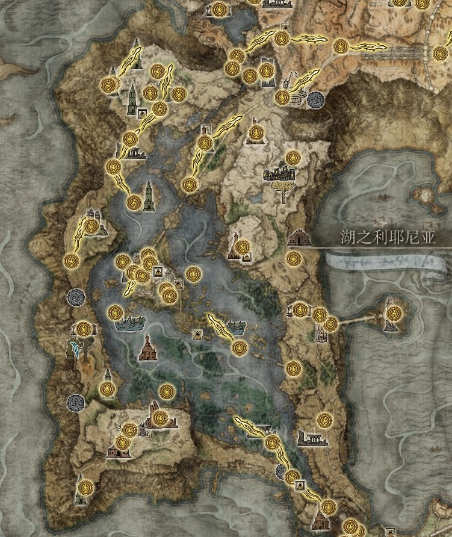
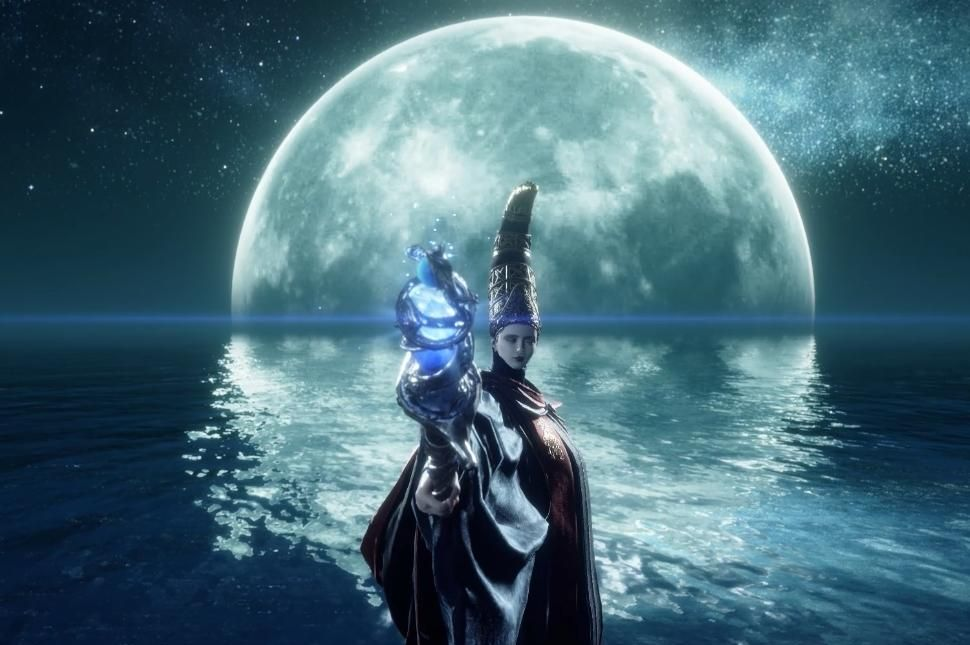

| 返回地图 | 利耶尼亚 | 区域介绍 |
|---|---|---|
|  | 穿过史东薇尔城最后的屏障，来到水雾氤氲的湖之利耶尼亚。这里远不如宁姆格福那么辽阔宽广，站在山坡上，整个利耶尼亚尽收眼底：东西两侧狭长的山岗，还有北边高耸的格密尔火山，包围着利耶尼亚湖，像围着一条静谧的蓝灰色绸缎。而在这片蓝灰色之上，伫立着整个交界地的魔法殿堂--雷亚卢卡利亚学院。 卡利亚的魔法师探寻着星与月的魔法，在这座魔法城堡里仰望着整个狭间之地最明朗的夜空。每当夜晚降临，众星拱月，连巨大的黄金树枝桠都难以遮盖这抹神秘的光辉。 如果说最深沉的秘密需要美丽的外衣包裹，那雷亚卢卡利亚便是不需要装饰就足以冠绝的秘密。 |
|
| 区域头目 | 头目介绍 | |
|  | 作为上个时代遗留下来的最后一个王朝，据点为湖之利耶尼亚，玛莉卡通过性转为拉达冈出征卡利亚王朝但是却在出征时遇到满月女王蕾娜拉，与其相爱并结婚并生下了半神月之公主拉妮，审判官拉卡德，"碎星英雄"拉塔恩。这里注意一下姓拉的都是满月女王跟拉达冈生的但是由于葛孚雷失去赐福被驱逐出狭间地，玛莉卡自己宣称要召回拉达冈，让拉达冈成为王夫以及下一任艾尔登之王 并对外宣称这几位孩子都将成为半神并赐予了他们大卢恩。 这导致了满月女王变成失心疯，一心想再造自己的孩子。 |
|